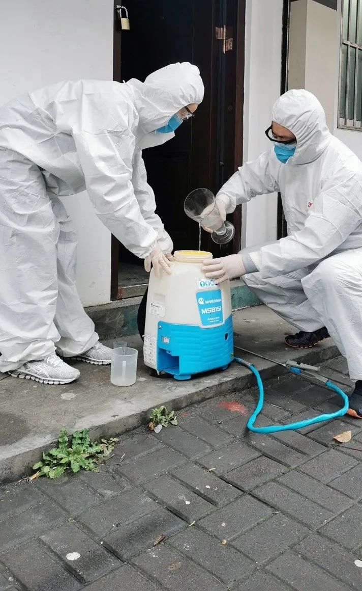

伊朗为何成了中东疫情重灾区，他们如何有效抗疫？
原文链接 备份链接 虽然多数民众情绪表现稳定，但药店里口罩、酒精、消毒水已经被抢购一空。长期遭受制裁的伊朗，在医疗物资、医疗条件上确实没有办法应付疫情大规模爆发而产生的医疗需求上升。 2020年2月21日，伊朗纳杰夫国际机场，工作人员为旅 …
编者按：新冠病毒封住了大家的脚步，闷在家里做贡献，成了上海人的日常；而有那么一群人，却每天都要走街串巷，越是容易传播病毒的地方，越是普通人避之唯恐不及的地方，越要往里冲——陶贵永就是其中之一，他们是城市里的“逆行者”——专业卫生消杀人员。
口述 | 陶贵永
整理 | 阿 布
我叫陶贵永，是长宁区新华街道爱国卫生服务社的专业卫生消杀员。在没有突发疫情的时候，我们的工作主要是除四害和病媒防制，说得简单通俗一点——春秋天要去食堂饭店灭老鼠，夏天要喷洒药水灭蚊蝇。
我从事病媒防制工作已经8年了，做我们这一行需要人社部颁发的专业证书，分初级、中级和高级，每一级都需要经过专门学校的培训、考试，还需要一定的工作年限，我目前是高级职称。
正是因为受过专业的训练，我们很清楚针对不同的疫情需要不同的消杀方案——比如说登革热疫情，涉及面积更大，确诊病例的直径200米范围内都是重点消杀区域；而新冠病毒影响范围相对小，发现病例的话，需要对整栋楼进行重点消杀。不同疫情配备不同的预案、不同的流程，我们平时就很熟悉了，所以这次疫情一来，马上就做好了应急预案。

前几天我们接到街道的通知，法华镇路某小区发现一名确诊病例。等病人送往医院后，我们马上赶到现场——病人家属正在收拾行李准备搬去别的地方隔离，凡是他们带走的衣物、用品、车辆我们都要进行消毒，人离开以后，对病人居住过的房子也进行消毒。
到了现场我发现，这是一栋26层的电梯房，我心想这下任务重了——从大堂到顶楼，每一层的楼道、电梯间、公共部位都要进行喷洒消毒，背着40斤的消毒桶一层一层爬上去，一层一层喷……从下午4点左右一直忙到夜里11点钟，浑身湿透，口罩摘下来都能甩出水。像这样的消杀要重复14天，每天背着40斤桶爬26层楼，讲不辛苦是不可能的，讲不紧张也是不现实的，但我们是专业人员，如果我们也害怕了，还怎么缓解居民的恐惧呢？
有确诊病例的小区，居民肯定是恐慌的，看见我们在消毒，有时候居民就会问我们：你们的药水怎么没有味道？浓度够吗？这时候我就要跟他们解释：药水都是严格按照防疫期间疾控部门下发的环境预防性消毒技术规范配制药物浓度的，包括消毒的区域、频次都是有明确规定的，消毒这个事情马虎不得。听了我的解释，居民们也就越来越安心了。至于我们自己，尽可能做好防护措施，穿好防护服，戴好护目镜，相信专业知识可以保护自己。
我从2月3号复工，到现在已经快一个月了。平时没有发现确诊病例的时候，我们的工作主要是预防消杀——每天早上8点到岗，先预估一下今天的消杀面积，然后进行消毒液的配置，一般用的是84，1比60的比例兑纯水，一桶配备好的消毒水有30斤重，加上桶自重10斤，一共40斤。

我们有一支队伍每天排班，9点左右我就和搭档陆玉峰背着桶出发了——1个集贸市场、6个居民小区的12个垃圾箱房及健身苑点、1个垃圾中转站、2个公共厕所，这就是我们这一组一天的工作量。基本上是上午打完一桶，中午回到公司吃个中饭，稍事休息后继续配置药水、出发喷洒，一天下来基本上要喷完2-3桶。这个事情不能马虎，每个角角落落都要喷到位，所以一天忙完基本上太阳也要落山了。

我的爱人是武汉人，今年春节前就回武汉去探亲了，现在还在武汉，目前身体健康。我一方面在上海做好自己的工作，一方面也牵挂武汉的亲人朋友。每天晚上都和爱人视频电话聊一个小时，据她所说，武汉现在也比以前管得紧了，一方面是地毯式排查病患，一方面是封闭式管理，我听了稍微放心一点。
像我们这样的卫生消杀员还有很多，长宁区就有180多个。有人说我们也是战士，我觉得不敢当，医务人员都在前线呢，我们只是做好自己的专业工作，疫情当前，普通人也要尽一份自己的公民职责，你说对伐？


征集令
《新民周刊》现面向全国征集新冠肺炎采访对象和真实故事：
如果你是参与抗击新冠肺炎疫情的医护人员或其家属，我们希望聆听你的“战疫”故事，也希望传达你的诉求。
如果你是确诊、疑似患者本人或家属，我们希望了解你和家人如何“抗疫”的过程，让外界了解你的真实经历。
如果你是疫情严重地区的普通市民，我们希望展现你的乐观，并倾听你所需的帮助。
如果你是公共服务人员或各类捐助者，我们希望看到你的“最美逆行”，记录下你的无私。
……
抗击新冠肺炎疫情，我们诚征对疫情了解的社会各界人士，提供相关线索，说出你的故事，让我们用新闻留存这一切。
《新民周刊》新冠肺炎线索征集值班编辑联系方式（添加时请简要自我介绍）：
周一：应 琛 微信号：paulineying0127
周二：金 姬 微信号：gepetta
周三：黄 祺 微信号：shewen-2020
周四：周 洁 微信号：asyouasyou
周五：孔冰欣 微信号：kbx875055141
周六：吴 雪 微信号：shyshine1105
周日：姜浩峰 微信号：jianggeladandong
✳如你需要捐赠物资，可与以下两位工作人员联系:王勇：WangYong-SH 吴轶君：rommy150708（添加时请注明“捐物资”，方便工作人员快速通过您的申请，谢谢。）
新闻是历史的底稿，你们是历史的见证者。期待你的故事、你的线索！

▼
大家还都在看这些
▼
新民周刊所有平台稿件， 未经正式授权
一律不得转载、出版、改编或进行
与新民周刊版权相关的其他行为，违者必究


原文链接 备份链接 虽然多数民众情绪表现稳定，但药店里口罩、酒精、消毒水已经被抢购一空。长期遭受制裁的伊朗，在医疗物资、医疗条件上确实没有办法应付疫情大规模爆发而产生的医疗需求上升。 2020年2月21日，伊朗纳杰夫国际机场，工作人员为旅 …
原文链接 备份链接 国内非湖北地区25日新增病例24例，其中北京10例，从这些地方接受医学观察者数量、新增疑似病例以及待排查疑似病例等上游数据均持续稳步下降的态势看，此数据大幅反弹应属异常 文 |《财经》数据研究员徐进 图 |《财经》视觉 …
原文链接 备份链接 目前包括中国大陆在内，全球已经有41个国家和地区出现了疫情，其中，韩国是中国大陆之外疫情蔓延最快的国家。 尽管如此，世卫组织不希望在“没有谨慎和清晰地分析事实情况之前”仓促宣布疫情为全球“大流行病” 文 |《财经》特派 …
原文链接 备份链接 目前，伊朗是中东地区确诊病例最多的国家。截至27日，伊朗共确诊245例新冠病毒感染病例，其中26例死亡，25例治愈出院。 全文3274字，阅读约需6.5分钟 截至27日，全球除南极洲外的六大洲都出现了新冠病毒感染病 …
原文链接 备份链接 韩国1月20日发现首例确诊病例，此后一个月疫情发展缓慢，到2月18日确诊31例。2月19日后突然暴增，一周新增超过1200例。 18日确诊的第31号患者，被视为“超级传播者”。 韩国新冠疫情的一大特征是，在特定群 …